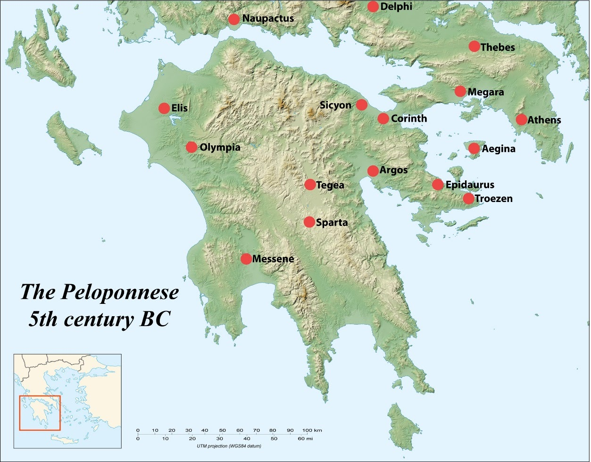

The Peloponnesian League
Overview

“More than 100 years before the Athenians formed the Delian League, the Spartans had formed a league of their own — known as the Peloponnesian League.”
The Peloponnesian League differed substantially from the Delian League. Also called “The Lacedaemonians and their allies,” it emerged in the 6th century BC. Its primary purposes included maintaining Sparta’s regional dominance and safeguarding member states from Argos’s potential threat.
Historical Formation
Following Sparta’s victory over Argos in 546 BC, the League persisted with a fundamentally different organisational model than Athens’ later creation. The League encompassed Peloponnesian states except Argos and Achaea. Rather than requiring regular monetary payments, members contributed military forces during wartime only.
Key Characteristics
The League:
- Recognised member independence
- Unified military strength across the Peloponnesian region
- Protected Sparta from rival city-states
- Opposed tyranny and supported oligarchic governance
Structure and Operations
The League convened exclusively during wartime through a “Council of Allies” composed of two equal, independent groups.
Historical Significance
Athens potentially modelled its own league on this Peloponnesian structure, despite organisational and purpose differences.